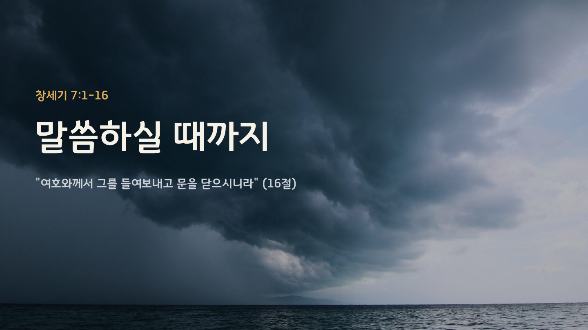

2026.11.22 주일 설교 묵상
말씀하실 때까지
말씀하시면 들어가고, 말씀하실 때까지 머뭅니다. 방주 안의 노아와 함께 걷는 일주일
주일 설교
본문: 창세기 7:1-16 (개역개정) · 설교자: 황성현 목사
방주가 완성되자 하나님은 "들어가라" 하셨고, 노아는 명하신 대로 다 준행했습니다. 그리고 모든 것이 들어간 뒤 "여호와께서 그를 들여보내고 문을 닫으시니라"(16절). 문을 닫은 분은 노아가 아니라 하나님이셨습니다. 노아는 하나님이 말씀하신 것은 그대로 했고, 말씀하지 않으신 하나님의 몫은 하나님께 남겨 두었습니다. 그리고 하나님이 "나오라" 하실 때까지 1년이 넘도록 방주 안에 머물렀습니다. 홍수 때에도 왕으로 좌정하신 하나님(시 29:10), 끝까지 순종하시고 아버지께 맡기신 예수님을 바라보며, 말씀하시면 들어가고 말씀하실 때까지 머무는 한 주를 걸어갑니다.
방주가 완성되자 하나님은 "들어가라" 하셨고, 노아는 명하신 대로 다 준행했습니다. 그리고 모든 것이 들어간 뒤 "여호와께서 그를 들여보내고 문을 닫으시니라"(16절). 문을 닫은 분은 노아가 아니라 하나님이셨습니다. 노아는 하나님이 말씀하신 것은 그대로 했고, 말씀하지 않으신 하나님의 몫은 하나님께 남겨 두었습니다. 그리고 하나님이 "나오라" 하실 때까지 1년이 넘도록 방주 안에 머물렀습니다. 홍수 때에도 왕으로 좌정하신 하나님(시 29:10), 끝까지 순종하시고 아버지께 맡기신 예수님을 바라보며, 말씀하시면 들어가고 말씀하실 때까지 머무는 한 주를 걸어갑니다.
주일 설교 슬라이드
1 / 36

좌우 화살표를 눌러 슬라이드를 넘겨보세요.
매일 이렇게 새로워지세요
- 말씀하시면 들어가기: 하나님이 분명히 말씀하신 일은 미루지 않고 오늘 순종합니다.
- 하나님의 몫 남겨 두기: 말씀하지 않으신 일을 내 생각으로 넘겨짚지 않고 하나님께 맡깁니다.
- 두신 자리에서 머물기: 답답한 자리에서도 할 일을 하며 하나님이 말씀하실 때를 기다립니다.
- 왕이신 하나님 신뢰하기: 그리 아니하실지라도 하나님이 나의 왕이심을 고백합니다.
요일별 묵상 여정
월요일
제목
성경구절